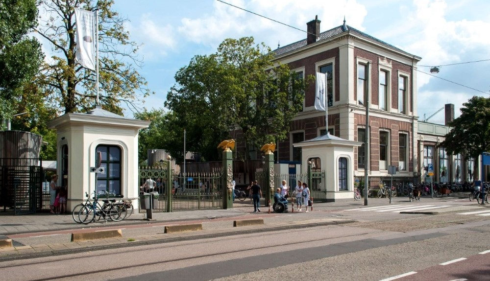
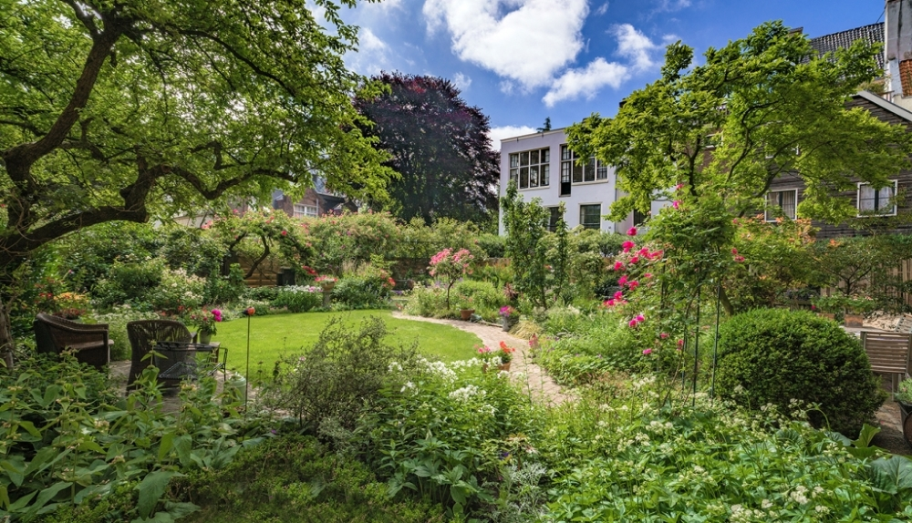

Dierenpark Artis werd geopend in 1838. Er zijn 750 dierensoorten in hun natuurlijke omgeving te vinden, waaronder zebra’s, giraffes, olifanten en chimpansees. In prachtige tuinen staan honderden boomsoorten en talloze planten en bloemen die elke lente en zomer volop bloeien. Een bezoek aan Artis is een fantastisch uitje voor jong en oud.
Bron: Holland.com
Museum Van Loon organiseert ieder jaar de Open Tuinen Dagen in het derde weekend van juni. In dit weekend wordt een verborgen deel van Amsterdam zichtbaar als ruim 25 grachtentuinen worden opengesteld voor het publiek. De mooiste tuinen van Amsterdam liggen het hele jaar verstopt achter de immense grachtenpanden, maar tijdens de Amsterdam Open Tuinen Dagen kunt u hier vrij rondlopen.
Bron: Holland.com